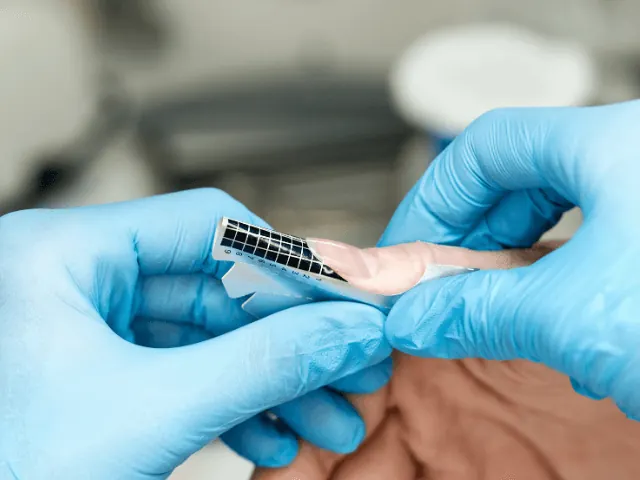

De juiste nagelsalon in Nijmegen kiezen? Tips hier!
Gepubliceerd op 11 september 2023, bijgewerkt op 21 oktober 2026
Onderdeel van de gids Nagelsalon in Nijmegen

Wil je je nagels laten verzorgen, verlengen of versieren? Dan wil je een nagelsalon waar je met een gerust hart naartoe gaat. In dit artikel lees je waar je op let bij het kiezen van een nagelsalon in Nijmegen, welke soorten nagelverlenging er zijn, hoe je je nagels zelf mooi houdt en welke salons we je aanraden.
Zo kies je de juiste nagelsalon
Lees reviews
Nijmegen heeft veel nagelsalons, van chique boetieks tot gezellige studio’s aan huis. Kijk voordat je boekt naar de beoordelingen van andere klanten. Die zeggen veel over de kwaliteit van het werk en over de sfeer in de salon.
Let op hygiëne
Mooie nagels moeten ook gezond blijven. Let erop dat de salon schoon is, dat instrumenten gesteriliseerd worden en dat er met schone handdoeken wordt gewerkt. Twijfel je daaraan? Kies dan een andere salon.
Vraag naar ervaring
Een goede nagelstylist werkt nauwkeurig, van het vijlen en polijsten tot het aanbrengen van de lak. Vraag gerust naar de ervaring en opleiding van de stylisten, zeker als je kiest voor nagelverlenging of nail art.
Vergelijk prijzen en pakketten
Prijzen verschillen per salon. Sommige salons bieden voordelige combinaties aan, zoals een manicure met pedicure, of korting voor vaste klanten. Vergelijk dus even voordat je boekt.

Nagelverlenging en versteviging: wat zijn de keuzes?
Wil je langere of sterkere nagels? Bij nagelsalons in Nijmegen kun je kiezen uit verschillende opties:
- Acrylnagels. Stevige kunstnagels die je nagels flink kunnen verlengen.
- Gelnagels. Een natuurlijker ogende verlenging of versteviging met gel die onder een lamp uithardt.
- Hybride systemen. Een combinatie van de eigenschappen van acryl en gel.
- Versteviging van je eigen nagels. Wil je geen kunstnagels? Nagelverharders met bijvoorbeeld keratine, calcium en vitamines helpen breuk te voorkomen. Breng regelmatig een dun laagje aan volgens de instructies.
Houd je van iets opvallends? Met nail art kun je je nagels versieren met stempels, schilderingen, glitters of steentjes. Van subtiele accenten tot gedurfde patronen.
Tips om je nagels mooi te houden
- Vijl in één richting en gebruik een milde remover zonder aceton om je nagels niet uit te drogen.
- Verzorg je nagelriemen. Een druppel nagelriemolie houdt je nagels en nagelriemen soepel. Hydratatie is de sleutel tot gezonde nagels.
- Laat je manicure langer meegaan door een goede basislaag en toplaag te gebruiken en je nagels te beschermen bij afwassen of schoonmaken.
- Neem onderweg een nagelvijl mee, zodat je een scheurtje meteen kunt bijwerken. Smeer ook regelmatig handcrème.
Nagelsalons in Nijmegen: onze tips
Lyna Nails
Een trendy salon die gespecialiseerd is in eigentijdse nagelstijlen. Klanten waarderen de vriendelijke service en de unieke designs.
The Nail Art Club
Hier draait alles om nail art: van gedurfde patronen tot fijne details. Ideaal als je je persoonlijkheid op je nagels wilt laten zien.
Chez Lotfia
Meer dan een nagelsalon: naast nagelbehandelingen kun je hier ook terecht voor andere schoonheidsbehandelingen, in een luxe sfeer.
Four Season Nail Salon
Een salon met een breed aanbod aan nagelbehandelingen en een persoonlijke aanpak.
Manic Manicures
Gespecialiseerd in verzorgde manicures, met goede reviews en veel aandacht voor detail.
Yasm Nails
Voor creatieve nagelontwerpen die bij jouw stijl passen, met een persoonlijke aanpak.
Win Nails Spa
Een combinatie van nagel- en spabehandelingen in een rustige sfeer.
Salon La Mirage
Een veelzijdige salon voor nagelverzorging, waar je ook terecht kunt voor een spraytan.
Pearl Nails
Verfijnde nagelbehandelingen. Klanten prijzen de vakkundigheid en hoe lang het werk mooi blijft.
WOW-Nails
Voor trendy nagelontwerpen met de wow-factor.
Me Nail en Spraytan
Nagelbehandelingen en natuurlijk ogende spraytans, met een persoonlijke aanpak.
Less is more
Een salon voor wie van naturel houdt: subtiele, verfijnde resultaten en goede producten.
Salon jij
Een salon waar persoonlijke aandacht centraal staat, met een warme en gastvrije sfeer.
Mgm Nails
Een salon met oog voor trends, unieke ontwerpen en vakmanschap.
Zoek je ook een pedicure voor je voeten? Lees dan onze tips over pedicures in Nijmegen.